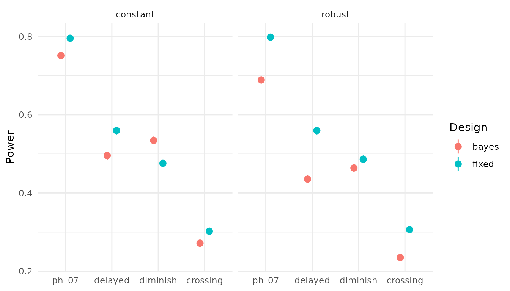
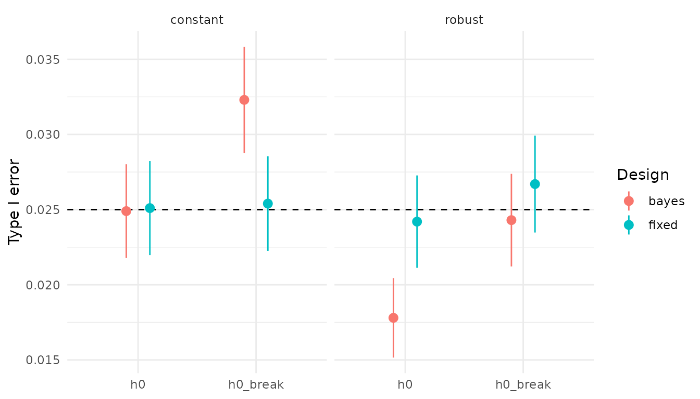

Fixed versus Bayesian adaptive designs for two-arm survival trials
Source:vignettes/adaptsurv.Rmd
adaptsurv.Rmd1 Motivation
Oncology trials require a large number of patients to reach a conclusion with acceptable error rates. However, if the data in the beginning of the trial are already conclusive in either direction, one can stop early for efficacy or futility. This faster decision saves time and money and exposes fewer patients to an inferior treatment. However, the decision thresholds have to be adjusted for the repeated looks, and this can cost power. This vignette examines how a Bayesian adaptive design compares with a fixed log-rank design in type I error, power, expected events and duration, and how robust it is when hazards are not proportional.
2 Simulation setup
We simulate trials with 400 patients each, recruited uniformly over
24 months, randomised 1:1, with exponential drop-out at a rate of 0.005
per month. Event times follow a piecewise exponential distribution,
i.e. the hazard is piecewise constant; rpwexp() draws them
by inverting the cumulative hazard. Each analysis uses the data
available at the calendar time of the k-th observed event
(cut_at_events()). The latent data of a trial are simulated
once, and all analyses of that trial are data cuts of it. Interim and
final analyses therefore use the same trial, as in
practice.
One simulated trial under HR = 0.7, cut at the first interim analysis:
set.seed(1)
lambda_c <- log(2) / 12 # control median 12 months
trial <- simulate_trial(n = 400, accrual_time = 24,
rates_c = lambda_c, rates_t = 0.7 * lambda_c,
dropout_rate = 0.005)
head(trial)
#> id arm entry event_time dropout_time
#> 1 1 1 0.03155176 17.1710102 115.505356
#> 2 2 0 0.11439469 13.0759079 12.388053
#> 3 3 0 0.22972300 1.0667446 634.197117
#> 4 4 1 0.23569169 0.0476717 5.973495
#> 5 5 1 0.27216463 8.3892983 662.289441
#> 6 6 0 0.28223363 6.4007498 501.315917
cut <- cut_at_events(trial, n_events = 124)
cut$t_cut # calendar time of the cut
#> [1] 22.76588
head(cut$data)
#> id arm time status
#> 1 1 1 17.1710102 1
#> 2 2 0 12.3880534 0
#> 3 3 0 1.0667446 1
#> 4 4 1 0.0476717 1
#> 5 5 1 8.3892983 1
#> 6 6 0 6.4007498 13 The two designs
Fixed design
Schoenfeld’s formula gives the number of events required for HR =
0.7, a one-sided type I error of 2.5 % and 80 % power:
D = 4 (z_0.975 + z_0.8)^2 / log(0.7)^2, which rounds up to
247. The signed log-rank statistic for the treatment arm is
z = (O - E) / sqrt(V); we reject if
z < qnorm(0.025) and use the Cox hazard ratio as the
effect estimate.
analyse_fixed(cut$data)
#> z p_one_sided hr
#> -2.980246307 0.001440083 0.585602859
run_fixed(trial, n_events = 247)
#> reject hr t_cut n_recruited n_events
#> 1.00000 0.58614 36.43408 400.00000 247.00000Bayesian adaptive design
We use an exponential working model with a Gamma(a0, b0) prior per
arm, a0 = 1 and b0 = 12 / log(2). This prior carries the information of
a single event, centred on the control median, and is negligible
compared with the 124 or more observed events. The conjugate posterior
is Gamma(a0 + d, b0 + T) per arm, with d the number of events and T the
total exposure time in that arm. The decision quantity is the posterior
probability P(HR < 1 | data); since HR = lambda_t / lambda_c, it has
the closed form pbeta(b_t / (b_t + b_c), a_t, a_c), where
(a_t, b_t) and (a_c, b_c) are the posterior parameters of the two arms.
We analyse at 124, 185 and 247 events (50 / 75 / 100 % of D), stop for
efficacy if P(HR < 1 | data) > c at any analysis, and stop for
futility at the interim analyses if P(HR < 1 | data) < 0.2
(non-binding). With a weak prior, P(HR < 1 | data) is close to 1
minus the one-sided log-rank p-value, as the numbers below show.
analyse_bayes(cut$data, a0 = 1, b0 = 12 / log(2))
#> prob hr_median
#> 0.9986005 0.5856206
1 - analyse_fixed(cut$data)[["p_one_sided"]]
#> [1] 0.9985599
run_bayes_adaptive(trial, c_eff = 0.9918, a0 = 1, b0 = 12 / log(2))
#> reject stop_look stop_futility hr n_events
#> 1.0000000 1.0000000 0.0000000 0.5856029 124.0000000
#> t_cut n_recruited
#> 22.7658790 379.00000004 Calibration of the efficacy threshold
With a single analysis, c = 0.975 = 1 - 0.025 would essentially
reproduce the log-rank test. With three analyses and c = 0.975, the
simulated type I error is 4.8 % (normal approximation: 4.9 %). Without
futility, the design rejects if and only if
max_k P_k > c, so c is the 97.5 % quantile of
max_k P_k under H0 (calibrate_bayes()).
Calibration under constant hazards returns c = 0.9873 (theory: 0.9877).
On 10,000 independent trials, the type I error is 2.37 % (Monte Carlo SE
0.16 percentage points). The threshold lies between 0.975 (one look) and
the Šidák bound for independent looks, 0.9916, because every analysis
contains the data of all earlier analyses, so the posterior
probabilities at the three looks are positively correlated.
The calibration was run once (it takes a few minutes) with:
set.seed(2026)
calibrate_bayes(n_sim = 10000, a0 = 1, b0 = 12 / log(2),
n = 400, accrual_time = 24,
rates_c = lambda_c, rates_t = lambda_c,
dropout_rate = 0.005)
#> 0.98730095 Operating characteristics
All scenarios use the control hazard λ = log(2)/12 (median survival 12 months) and, where the hazard changes, a single change point at 6 months:
| Scenario | Control arm | Treatment arm, months 0–6 | Treatment arm after 6 months | Hazard ratio over time |
|---|---|---|---|---|
h0 |
λ | λ | λ | 1 |
h0_break |
λ, then 0.6 λ | λ | 0.6 λ | 1 |
ph_07 |
λ | 0.7 λ | 0.7 λ | 0.7 |
delayed |
λ | λ | 0.6 λ | 1 → 0.6 |
diminish |
λ | 0.5 λ | λ | 0.5 → 1 |
crossing |
λ | 1.3 λ | 0.5 λ | 1.3 → 0.5 |
The results below are precomputed with
operating_characteristics() (10,000 trials per scenario,
see ?oc_results and dev/run_oc.R). A small run
looks like this:
scenarios <- list(
h0 = list(rates_c = lambda_c, breaks_c = numeric(0),
rates_t = lambda_c, breaks_t = numeric(0)),
ph_07 = list(rates_c = lambda_c, breaks_c = numeric(0),
rates_t = 0.7 * lambda_c, breaks_t = numeric(0))
)
set.seed(3)
operating_characteristics(scenarios, n_sim = 50, c_eff = 0.9873,
a0 = 1, b0 = 12 / log(2))
#> scenario design reject reject_se hr n_events duration n_recruited
#> 1 h0 fixed 0.00 0.00000000 1.0036375 247.00 31.08329 400.00
#> 2 h0 bayes 0.02 0.01979899 1.0291276 216.22 27.97236 382.58
#> 3 ph_07 fixed 0.86 0.04907138 0.6894366 247.00 34.97289 400.00
#> 4 ph_07 bayes 0.84 0.05184593 0.6639330 185.40 27.65699 377.44
#> early_stop stop_futility
#> 1 0.00 NA
#> 2 0.28 0.26
#> 3 0.00 NA
#> 4 0.60 0.00
oc <- oc_results
oc$scenario <- factor(oc$scenario,
levels = c("h0", "h0_break", "ph_07",
"delayed", "diminish", "crossing"))
oc_null <- oc[oc$scenario %in% c("h0", "h0_break"), ]
oc_alt <- oc[!oc$scenario %in% c("h0", "h0_break"), ]Proportional hazards (HR = 0.7)
ph <- oc[oc$scenario == "ph_07",
c("calibration", "design", "reject", "hr", "n_events",
"duration", "n_recruited", "early_stop")]
knitr::kable(ph, digits = 3, row.names = FALSE,
col.names = c("Calibration", "Design", "Power", "HR (geom. mean)",
"Events", "Duration (months)", "Recruited", "Early stop"))| Calibration | Design | Power | HR (geom. mean) | Events | Duration (months) | Recruited | Early stop |
|---|---|---|---|---|---|---|---|
| constant | fixed | 0.796 | 0.700 | 247.000 | 34.679 | 400.000 | 0.000 |
| constant | bayes | 0.751 | 0.675 | 185.636 | 27.408 | 378.746 | 0.608 |
| robust | fixed | 0.798 | 0.700 | 247.000 | 34.699 | 400.000 | 0.000 |
| robust | bayes | 0.689 | 0.675 | 193.121 | 28.310 | 382.016 | 0.540 |
Early stop is the proportion of trials that stopped at an interim analysis, for efficacy or futility.
With the constant calibration, the Bayesian design needs about a quarter fewer events and finishes about 7 months earlier, at the cost of about 5 percentage points of power. The geometric mean of the hazard ratio estimates is 0.700 for the fixed design (unbiased) and 0.675 for the adaptive design: trials that stop early tend to do so when the estimate is, by chance, particularly favourable.
Non-proportional hazards
library(ggplot2)
ggplot(oc_alt, aes(x = scenario, y = reject, colour = design)) +
geom_pointrange(aes(ymin = reject - 2 * reject_se,
ymax = reject + 2 * reject_se),
position = position_dodge(width = 0.4)) +
facet_wrap(~ calibration) +
labs(x = NULL, y = "Power", colour = "Design") +
theme_minimal()
Early analyses help when the effect is strongest early
(diminish: with the constant calibration, the adaptive
design has more power than the fixed design) and hurt when it is weakest
early (delayed, crossing). The futility rule
stops about 4 % of trials with a delayed (but real) effect and about 22
% under crossing hazards. Under crossing hazards, early harm and later
benefit partly cancel, and both designs have low power.
Type I error and robustness of the calibration
ggplot(oc_null, aes(x = scenario, y = reject, colour = design)) +
geom_hline(yintercept = 0.025, linetype = "dashed") +
geom_pointrange(aes(ymin = reject - 2 * reject_se,
ymax = reject + 2 * reject_se),
position = position_dodge(width = 0.4)) +
facet_wrap(~ calibration) +
labs(x = NULL, y = "Type I error", colour = "Design") +
theme_minimal()
The log-rank test, being nonparametric, keeps its level of 2.5 % in
both null scenarios. If the Bayesian design is calibrated under constant
hazards, its type I error rises to 3.2 % when both arms share a hazard
with a change point. The exponential working model is then misspecified,
and its posterior is too concentrated. Calibrating additionally under
h0_break gives c = 0.9918, which is even above the Šidák
bound of 0.9916. This robust threshold keeps 2.4 % under
h0_break, is conservative (1.8 %) under constant hazards
and costs about 6 percentage points of power under proportional hazards.
The conclusion is that a simulation-based calibration is only valid
under the assumptions it was done under.
Efficiency
eff <- oc_alt[oc_alt$design == "bayes",
c("calibration", "scenario", "n_events", "duration",
"n_recruited", "early_stop", "stop_futility")]
knitr::kable(eff, digits = 3, row.names = FALSE,
col.names = c("Calibration", "Scenario", "Events", "Duration (months)",
"Recruited", "Early stop", "Futility stop"))| Calibration | Scenario | Events | Duration (months) | Recruited | Early stop | Futility stop |
|---|---|---|---|---|---|---|
| constant | ph_07 | 185.636 | 27.408 | 378.746 | 0.608 | 0.002 |
| constant | delayed | 220.972 | 31.094 | 390.765 | 0.280 | 0.043 |
| constant | diminish | 192.060 | 27.319 | 377.731 | 0.504 | 0.002 |
| constant | crossing | 216.320 | 30.247 | 382.672 | 0.278 | 0.221 |
| robust | ph_07 | 193.121 | 28.310 | 382.016 | 0.540 | 0.002 |
| robust | delayed | 225.267 | 31.599 | 392.352 | 0.236 | 0.043 |
| robust | diminish | 200.345 | 28.160 | 381.501 | 0.435 | 0.003 |
| robust | crossing | 216.571 | 30.298 | 382.410 | 0.271 | 0.228 |
Early stop is the proportion of trials that stopped at an interim analysis, for efficacy or futility; Futility stop is the proportion stopped for futility.
6 Limitations
- Exponential working model with a single Gamma prior; a piecewise exponential model would be more robust.
- The robust calibration only protects against the null shapes it includes.
- 1:1 randomisation, uniform accrual, interim analyses at exact event counts.
- Crossing hazards: is the hazard ratio the right estimand? (e.g. the restricted mean survival time, RMST)
- Same maximum number of events for both designs; power could be recovered by a larger maximum or an O’Brien-Fleming-like threshold schedule.
- Each scenario has a single abrupt change of the hazard ratio,
whereas effects typically develop gradually. Smoothly changing hazards,
e.g. Weibull distributions, were not considered; they would show how the
exponential working model behaves under gradual rather than abrupt
misspecification.
rpwexp()can, however, approximate such hazards with many change points.
7 Reproducibility
The precomputed results were generated by the scripts
dev/calibrate.R (calibration; seeds 2026 and 2032,
validation 2027) and dev/run_oc.R (operating
characteristics; seeds 2031 and 2033) in the GitHub repository; the
dev/ folder is not part of the installed package. Each
script runs for up to about 15 minutes. The package was developed with
Claude (Anthropic) as a tutor and coding assistant: package scaffolding,
code templates, the vignette skeleton and code reviews were AI-assisted;
the implementation of the statistical core, the simulations and their
interpretation are my own.
sessionInfo()
#> R version 4.6.2 (2026-10-29)
#> Platform: x86_64-pc-linux-gnu
#> Running under: Ubuntu 24.04.5 LTS
#>
#> Matrix products: default
#> BLAS: /usr/lib/x86_64-linux-gnu/openblas-pthread/libblas.so.3
#> LAPACK: /usr/lib/x86_64-linux-gnu/openblas-pthread/libopenblasp-r0.3.26.so; LAPACK version 3.12.0
#>
#> locale:
#> [1] LC_CTYPE=C.UTF-8 LC_NUMERIC=C LC_TIME=C.UTF-8
#> [4] LC_COLLATE=C.UTF-8 LC_MONETARY=C.UTF-8 LC_MESSAGES=C.UTF-8
#> [7] LC_PAPER=C.UTF-8 LC_NAME=C LC_ADDRESS=C
#> [10] LC_TELEPHONE=C LC_MEASUREMENT=C.UTF-8 LC_IDENTIFICATION=C
#>
#> time zone: UTC
#> tzcode source: system (glibc)
#>
#> attached base packages:
#> [1] stats graphics grDevices utils datasets methods base
#>
#> other attached packages:
#> [1] ggplot2_4.0.3 adaptsurv_0.1.0
#>
#> loaded via a namespace (and not attached):
#> [1] vctrs_0.7.3 cli_3.6.6 knitr_1.52 rlang_1.3.0
#> [5] xfun_0.62 otel_0.2.0 S7_0.2.2 textshaping_1.0.5
#> [9] jsonlite_2.0.0 labeling_0.4.3 glue_1.8.1 htmltools_0.5.9
#> [13] ragg_1.5.2 sass_0.4.10 scales_1.4.0 rmarkdown_2.32
#> [17] grid_4.6.2 evaluate_1.0.5 jquerylib_0.1.4 fastmap_1.2.0
#> [21] yaml_2.3.12 lifecycle_1.0.5 compiler_4.6.2 RColorBrewer_1.1-3
#> [25] fs_2.1.0 lattice_0.23-1 farver_2.1.2 systemfonts_1.3.2
#> [29] digest_0.6.39 R6_2.6.1 splines_4.6.2 Matrix_1.7-6
#> [33] bslib_0.12.0 withr_3.0.3 tools_4.6.2 gtable_0.3.6
#> [37] survival_3.8-12 pkgdown_2.2.1 cachem_1.1.0 desc_1.4.3